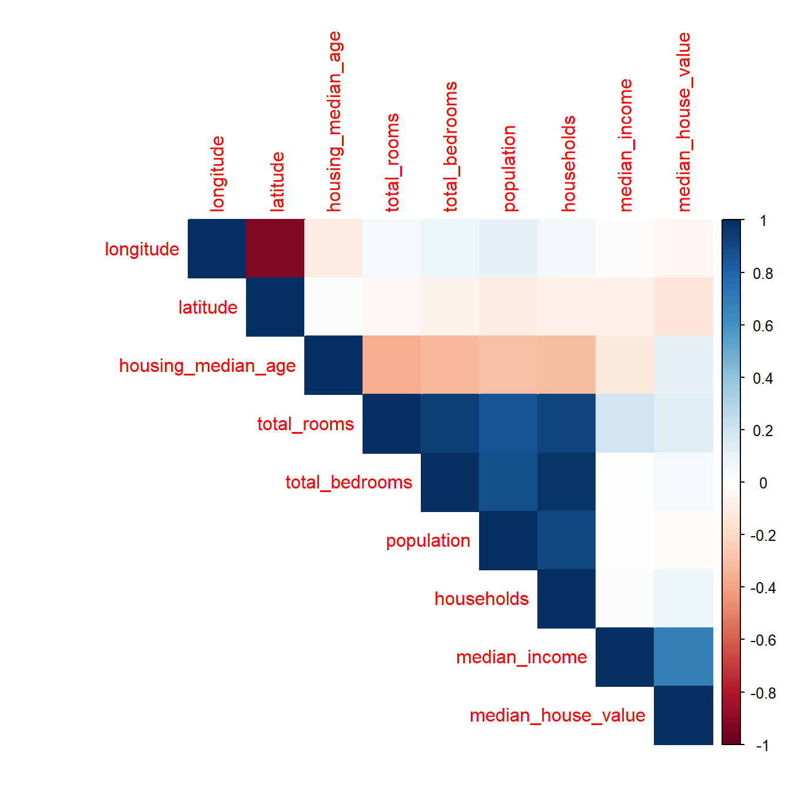
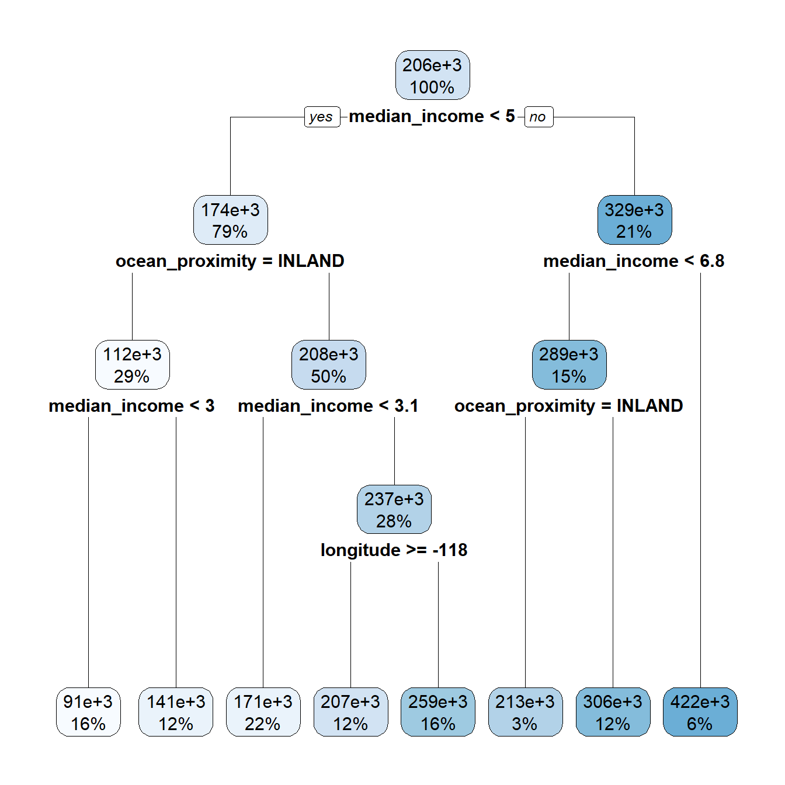
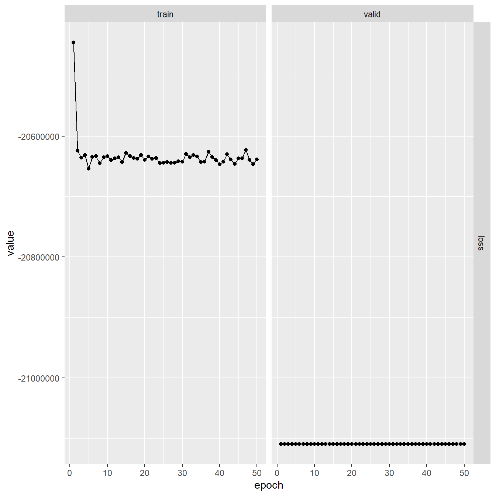
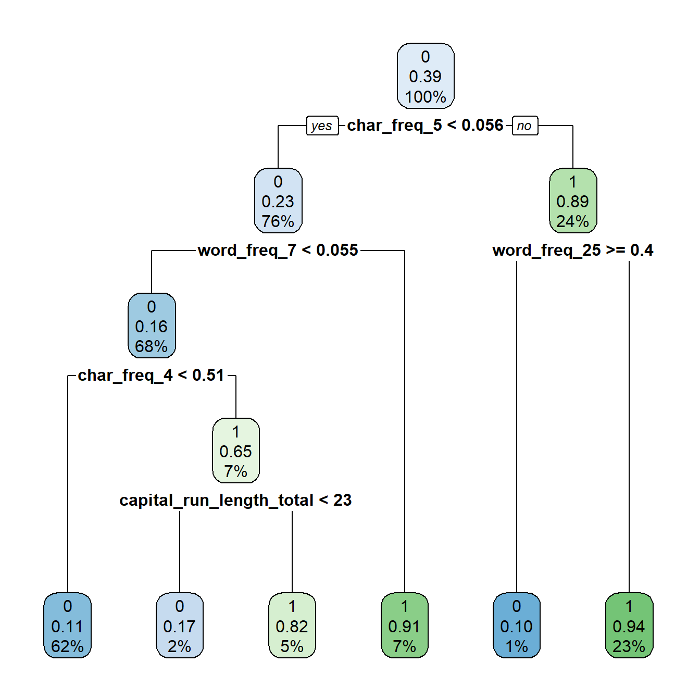
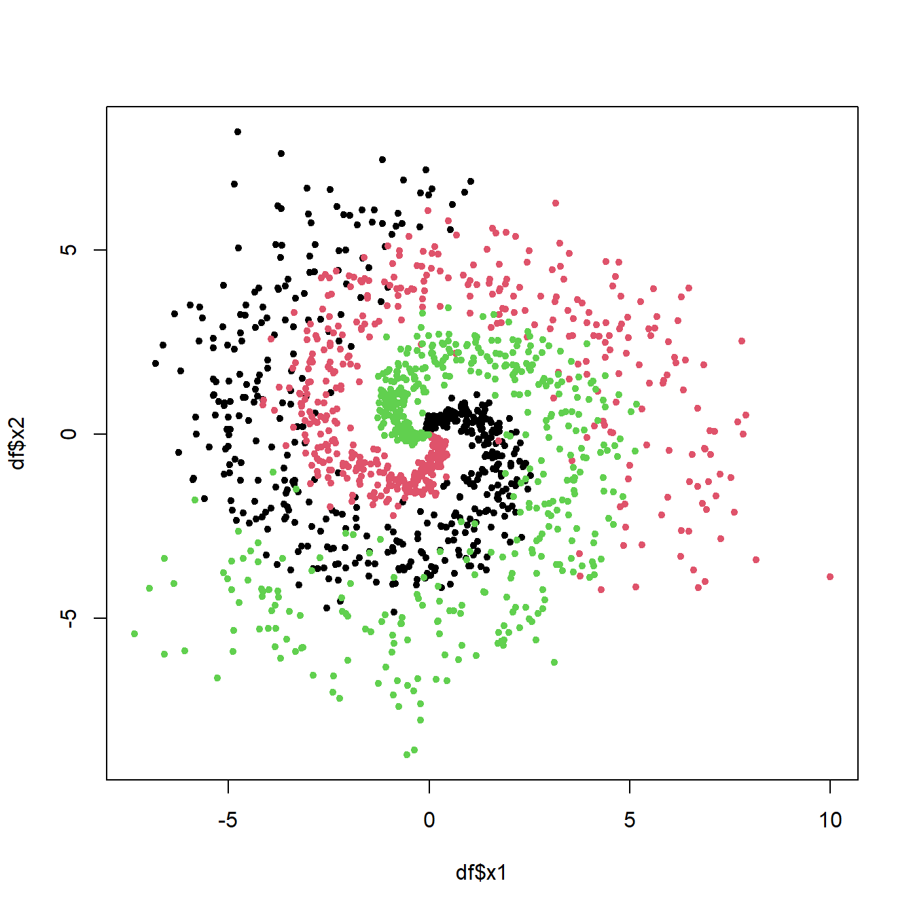
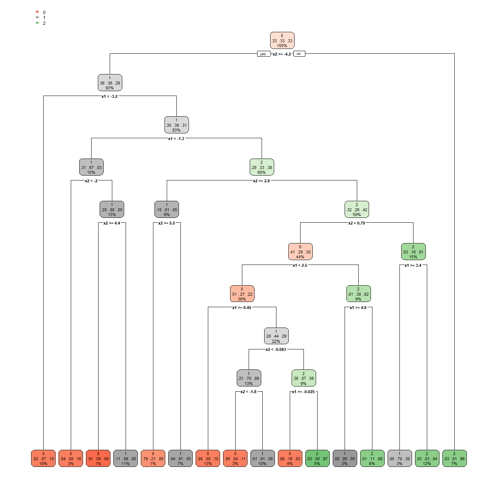
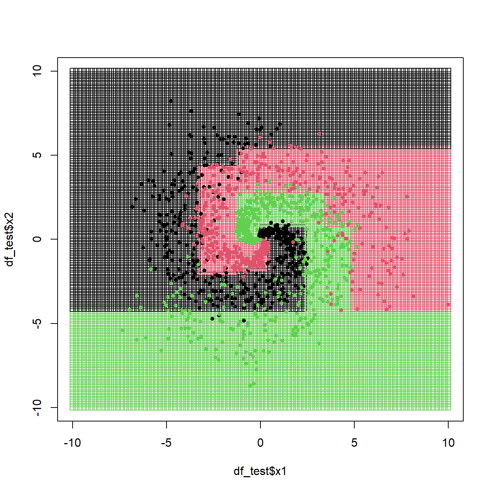
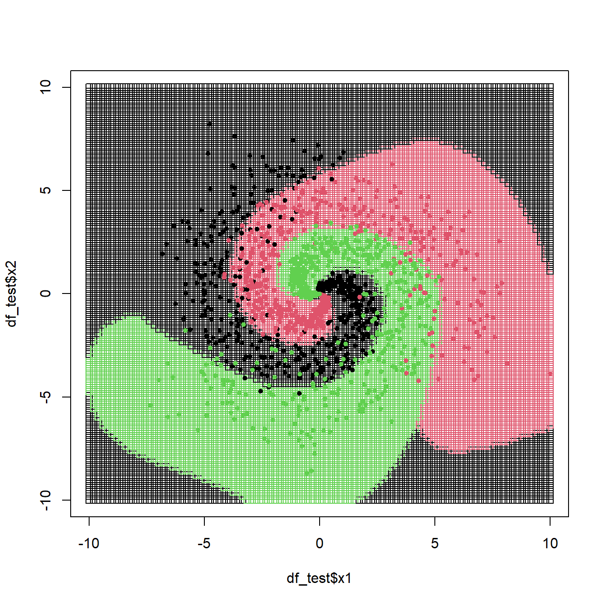

packages <- c(
"dplyr",
"readr",
"tidyr",
"purrr",
"broom",
"magrittr",
"corrplot",
"caret",
"rpart",
"rpart.plot",
"e1071",
"torch",
"luz"
)
#renv::install(packages)
sapply(packages, require, character.only=T)
Due: Wed, Apr 19, 2023 @ 11:59pm
Please read the instructions carefully before submitting your assignment.
- This assignment requires you to only upload a
PDFfile on Canvas - Don’t collapse any code cells before submitting.
- Remember to make sure all your code output is rendered properly before uploading your submission.
⚠️ Please add your name to the author information in the frontmatter before submitting your assignment ⚠️
In this assignment, we will explore decision trees, support vector machines and neural networks for classification and regression. The assignment is designed to test your ability to fit and analyze these models with different configurations and compare their performance.
We will need the following packages:
Question 1
60 points
Prediction of Median House prices
1.1 (2.5 points)
The data folder contains the housing.csv dataset which contains housing prices in California from the 1990 California census. The objective is to predict the median house price for California districts based on various features.
Read the data file as a tibble in R. Preprocess the data such that:
- the variables are of the right data type, e.g., categorical variables are encoded as factors
- all column names to lower case for consistency
- Any observations with missing values are dropped
path <- "data/housing.csv"
df <- read_csv(path) %>%
mutate_if(\(x) is.character(x), as.factor) %>%
(\(x) {
names(x) <- tolower(names(x))
x
})Rows: 20640 Columns: 10
── Column specification ────────────────────────────────────────────────────────
Delimiter: ","
chr (1): ocean_proximity
dbl (9): longitude, latitude, housing_median_age, total_rooms, total_bedroom...
ℹ Use `spec()` to retrieve the full column specification for this data.
ℹ Specify the column types or set `show_col_types = FALSE` to quiet this message.df <- na.omit(df)
head(df)# A tibble: 6 × 10
longitude latitude housing_median_age total_rooms total_bedrooms population
<dbl> <dbl> <dbl> <dbl> <dbl> <dbl>
1 -122. 37.9 41 880 129 322
2 -122. 37.9 21 7099 1106 2401
3 -122. 37.8 52 1467 190 496
4 -122. 37.8 52 1274 235 558
5 -122. 37.8 52 1627 280 565
6 -122. 37.8 52 919 213 413
# ℹ 4 more variables: households <dbl>, median_income <dbl>,
# median_house_value <dbl>, ocean_proximity <fct>1.2 (2.5 points)
Visualize the correlation matrix of all numeric columns in df using corrplot()
df %>%
select_if(is.numeric) %>%
cor() %>%
corrplot(type = "upper", method = "color")
1.3 (5 points)
Split the data df into df_train and df_split using test_ind in the code below:
set.seed(42)
test_ind <- sample(
1:nrow(df),
floor( nrow(df)/10 ),
replace=FALSE
)
df_train <- df[-test_ind, ]
df_test <- df[test_ind, ]
nrow(df_train) + nrow(df_test) == nrow(df)[1] TRUE1.4 (5 points)
Fit a linear regression model to predict the median_house_value :
latitudelongitudehousing_median_agetotal_roomstotal_bedroomspopulationmedian_incomeocean_proximity
Interpret the coefficients and summarize your results.
lm_fit <- lm(median_house_value ~. -households, data = df_train)
summary(lm_fit)
Call:
lm(formula = median_house_value ~ . - households, data = df_train)
Residuals:
Min 1Q Median 3Q Max
-559024 -42322 -10389 28743 710215
Coefficients:
Estimate Std. Error t value Pr(>|t|)
(Intercept) -2.273e+06 9.138e+04 -24.873 < 2e-16 ***
longitude -2.681e+04 1.060e+03 -25.305 < 2e-16 ***
latitude -2.539e+04 1.047e+03 -24.244 < 2e-16 ***
housing_median_age 1.074e+03 4.616e+01 23.261 < 2e-16 ***
total_rooms -6.159e+00 8.431e-01 -7.306 2.87e-13 ***
total_bedrooms 1.353e+02 4.254e+00 31.804 < 2e-16 ***
population -3.413e+01 9.838e-01 -34.694 < 2e-16 ***
median_income 3.936e+04 3.573e+02 110.154 < 2e-16 ***
ocean_proximityINLAND -4.018e+04 1.836e+03 -21.891 < 2e-16 ***
ocean_proximityISLAND 1.324e+05 3.442e+04 3.847 0.00012 ***
ocean_proximityNEAR BAY -2.522e+03 2.022e+03 -1.247 0.21226
ocean_proximityNEAR OCEAN 4.349e+03 1.658e+03 2.622 0.00875 **
---
Signif. codes: 0 '***' 0.001 '**' 0.01 '*' 0.05 '.' 0.1 ' ' 1
Residual standard error: 68780 on 18378 degrees of freedom
Multiple R-squared: 0.643, Adjusted R-squared: 0.6428
F-statistic: 3009 on 11 and 18378 DF, p-value: < 2.2e-161.5 (5 points)
Complete the rmse function for computing the Root Mean-Squared Error between the true y and the predicted yhat, and use it to compute the RMSE for the regression model on df_test
rmse <- function(y, yhat) {
sqrt(mean((y - yhat)^2))
}
lm_predictions <- predict(lm_fit, newdata = df_test)
lm_rmse <- rmse(df_test$median_house_value, lm_predictions)
lm_rmse[1] 68339.821.6 (5 points)
Fit a decision tree model to predict the median_house_value using the same predictors as in 1.4. Use the rpart() function.
rpart_fit <- rpart(median_house_value ~. -households,
data = df_train)
rpart_predictions <- predict(rpart_fit, newdata = df_test)Visualize the decision tree using the rpart.plot() function.
rpart.plot(rpart_fit)
Report the root mean squared error on the test set.
rpart_predictions <- predict(rpart_fit, newdata = df_test)
rpart_rmse <- rmse(df_test$median_house_value, rpart_predictions)
rpart_rmse[1] 75876.871.7 (5 points)
Fit a support vector machine model to predict the median_house_value using the same predictors as in 1.4. Use the svm() function and use any kernel of your choice. Report the root mean squared error on the test set.
svm_fit <- svm(median_house_value ~. -households,
data = df_train,
kernel = "linear",
cost = 10,
scale = TRUE)
svm_predictions <- predict(svm_fit, newdata = df_test)
svm_rmse <- rmse(df_test$median_house_value, svm_predictions)
svm_rmse[1] 69685.651.8 (25 points)
Initialize a neural network model architecture:
NNet <- nn_module(
initialize = function(p, q1, q2, q3){
self$hidden1 <- nn_linear(p, q1)
self$hidden2 <- nn_linear(q1, q2)
self$hidden3 <- nn_linear(q2, q3)
self$output <- nn_linear(q3, 1)
self$activation <- nn_relu()
self$sigmoid <- nn_sigmoid()
},
forward = function(x){
x %>%
self$hidden1() %>% self$activation() %>%
self$hidden2() %>% self$activation() %>%
self$hidden3() %>% self$activation() %>%
self$output() %>% self$sigmoid()
}
)Fit a neural network model to predict the median_house_value using the same predictors as in 1.4. Use the model.matrix function to create the covariate matrix and luz package for fitting the network with \(32, 16, 8\) nodes in each of the three hidden layers.
M <- model.matrix(median_house_value ~ . -households, data = df_train)nnet_fit <- NNet %>%
setup(
loss = nn_bce_loss(),
optimizer = optim_adam,
#metrics = list(
# luz_metric_accuracy()
) %>%
set_hparams(
p = ncol(M), q1=32, q2=16, q3=8
) %>%
set_opt_hparams(
lr = 0.1
) %>%
fit(
data = list(
model.matrix(median_house_value ~. -households, data = df_train),
(df_train$median_house_value %>% as.numeric()-1) %>% as.matrix
),
valid_data = list(
model.matrix(median_house_value ~. -households, data = df_test),
(df_test$median_house_value %>% as.matrix()-1) %>% as.matrix
),
epochs=50,
dataloader_options = list(batch_size = 128, shuffle=TRUE),
verbose = FALSE # Change to TRUE while tuning. But, set to FALSE before submitting
)Plot the results of the training and validation loss and accuracy.
plot(nnet_fit)# Insert your code here
Report the root mean squared error on the test set.
nnet_predictions <- predict(
nnet_fit,
model.matrix(median_house_value ~ . -households, data = df_test)
)
rmse_nnet <- rmse(df_test$median_house_value, nnet_predictions)
rmse_nnettorch_tensor
242118
[ CUDAFloatType{} ]
Warning
Remember to use the as_array() function to convert the predictions to a vector of numbers before computing the RMSE with rmse()
1.9 (5 points)
Summarize your results in a table comparing the RMSE for the different models. Which model performed best? Why do you think that is?
... # Insert your code here
—
Question 2
50 points
Spam email classification
The data folder contains the spam.csv dataset. This dataset contains features extracted from a collection of spam and non-spam emails. The objective is to classify the emails as spam or non-spam.
2.1 (2.5 points)
Read the data file as a tibble in R. Preprocess the data such that:
- the variables are of the right data type, e.g., categorical variables are encoded as factors
- all column names to lower case for consistency
- Any observations with missing values are dropped
spam <- "data/spambase.csv"
df <- read_csv(spam) %>%
mutate_if(\(x) is.character(x), as.factor) %>%
(\(x) {
names(x) <- tolower(names(x))
x
})Rows: 4601 Columns: 58
── Column specification ────────────────────────────────────────────────────────
Delimiter: ","
dbl (58): word_freq_1, word_freq_2, word_freq_3, word_freq_4, word_freq_5, w...
ℹ Use `spec()` to retrieve the full column specification for this data.
ℹ Specify the column types or set `show_col_types = FALSE` to quiet this message.df <- na.omit(df)
head(df)# A tibble: 6 × 58
word_freq_1 word_freq_2 word_freq_3 word_freq_4 word_freq_5 word_freq_6
<dbl> <dbl> <dbl> <dbl> <dbl> <dbl>
1 0 0.64 0.64 0 0.32 0
2 0.21 0.28 0.5 0 0.14 0.28
3 0.06 0 0.71 0 1.23 0.19
4 0 0 0 0 0.63 0
5 0 0 0 0 0.63 0
6 0 0 0 0 1.85 0
# ℹ 52 more variables: word_freq_7 <dbl>, word_freq_8 <dbl>, word_freq_9 <dbl>,
# word_freq_10 <dbl>, word_freq_11 <dbl>, word_freq_12 <dbl>,
# word_freq_13 <dbl>, word_freq_14 <dbl>, word_freq_15 <dbl>,
# word_freq_16 <dbl>, word_freq_17 <dbl>, word_freq_18 <dbl>,
# word_freq_19 <dbl>, word_freq_20 <dbl>, word_freq_21 <dbl>,
# word_freq_22 <dbl>, word_freq_23 <dbl>, word_freq_24 <dbl>,
# word_freq_25 <dbl>, word_freq_26 <dbl>, word_freq_27 <dbl>, …2.2 (2.5 points)
Split the data df into df_train and df_split using test_ind in the code below:
set.seed(42)
test_ind <- sample(
1:nrow(df),
floor( nrow(df)/10 ),
replace=FALSE
)
df_train <- df[-test_ind, ]
df_test <- df[test_ind, ]Complete the overview function which returns a data frame with the following columns: accuracy, error, false positive rate, true positive rate, between the true true_class and the predicted pred_class for any classification model.
overview <- function(pred_class, true_class) {
accuracy <- sum(pred_class == true_class) / length(true_class) # Insert your code here
error <- 1 - accuracy # Insert your code here
true_positives <- sum(pred_class=="spam" & true_class=="spam") # Insert your code here
true_negatives <- sum(pred_class == "nonspam" & true_class=="nonspam") # Insert your code here
false_positives <- sum(pred_class="spam" & true_class=="nonspam") # Insert your code here
false_negatives <- sum(pred_class=="nonspam" & true_class=="spam") # Insert your code here
true_positive_rate <- true_positives / sum(true_class == "spam") # Insert your code here
false_positive_rate <- false_positives / sum(true_class == "nonspam") # Insert your code here
return(
data.frame(
accuracy = accuracy,
error = error,
true_positive_rate = true_positive_rate,
false_positive_rate = false_positive_rate
)
)
}2.3 (5 points)
Fit a logistic regression model to predict the spam variable using the remaining predictors. Report the prediction accuracy on the test set.
glm_fit <- glm(spam ~ ., data = df_train, family = binomial)Warning: glm.fit: fitted probabilities numerically 0 or 1 occurredglm_classes <- predict(glm_fit, df_test, type = "response") > 0.5
glm_accuracy <- mean(glm_classes == df_test$spam)
glm_accuracy[1] 0.9239132.4 (5 points)
Fit a decision tree model to predict the spam variable using the remaining predictors. Use the rpart() function and set the method argument to "class".
rpart_fit <- rpart(
spam ~ .,
data = df_train,
method = "class"
)
rpart_classes <- predict(rpart_fit, df_test, type = "class")Visualize the decision tree using the rpart.plot() function.
rpart.plot(rpart_fit)
Report the prediction accuracy on the test set.
rpart_test_pred <- predict(rpart_fit, df_test, type="class")
rpart_classes <- mean(rpart_test_pred == df_test$spam)
rpart_classes[1] 0.87826092.5 (5 points)
Fit a support vector machine model to predict the spam variable using the remaining predictors. Use the svm() function and use any kernel of your choice. Remember to set the type argument to "C-classification" if you haven’t already converted spam to be of type factor.
svm_fit <- svm(spam ~ ., data = df_train, kernel = "linear", type = "C-classification")Report the prediction accuracy on the test set.
svm_classes <- predict(svm_fit, newdata = df_test)
accuracy <- mean(svm_classes == df_test$spam)
accuracy[1] 0.91739132.6 (25 points)
Using the same neural network architecture as in 1.9, fit a neural network model to predict the spam variable using the remaining predictors.
Classification vs. Regression
Note that the neural network in Q 1.9 was a regression model. You will need to modify the neural network architecture to be a classification model by changing the output layer to have a single node with a sigmoid activation function.
Use the model.matrix function to create the covariate matrix and luz package for fitting the network with \(32, 16, 8\) nodes in each of the three hidden layers.
M <- model.matrix(spam ~ 0+.,data=df_train)nnet_fit <- NNet %>%
setup(
loss = nn_bce_loss(),
optimizer = optim_adam,
) %>%
set_hparams(
p = ncol(M), q1=32, q2=16, q3=8
) %>%
set_opt_hparams(
lr = 0.1
) %>%
fit(
data = list(
model.matrix(spam ~ 0 + ., data=df_train),
(df_train$spam %>% as.numeric()-1) %>% as.matrix
),
valid_data = list(
model.matrix(spam ~ 0 +., data=df_test),
(df_test$spam %>% as.matrix()-1) %>% as.matrix
),
epochs=50,
dataloader_options = list(batch_size = 128, shuffle=TRUE),
verbose = TRUE # Change to TRUE while tuning. But, set to FALSE before submitting
)Epoch 1/50
Train metrics: Loss: -57.5658
Valid metrics: Loss: -58.8713
Epoch 2/50
Train metrics: Loss: -60.7666
Valid metrics: Loss: -58.8713
Epoch 3/50
Train metrics: Loss: -60.9863
Valid metrics: Loss: -58.8713
Epoch 4/50
Train metrics: Loss: -60.6934
Valid metrics: Loss: -58.8713
Epoch 5/50
Train metrics: Loss: -60.8398
Valid metrics: Loss: -58.8713
Epoch 6/50
Train metrics: Loss: -60.7666
Valid metrics: Loss: -58.8713
Epoch 7/50
Train metrics: Loss: -60.6933
Valid metrics: Loss: -58.8713
Epoch 8/50
Train metrics: Loss: -60.6689
Valid metrics: Loss: -58.8713
Epoch 9/50
Train metrics: Loss: -60.7178
Valid metrics: Loss: -58.8713
Epoch 10/50
Train metrics: Loss: -60.8398
Valid metrics: Loss: -58.8713
Epoch 11/50
Train metrics: Loss: -60.8887
Valid metrics: Loss: -58.8713
Epoch 12/50
Train metrics: Loss: -60.7178
Valid metrics: Loss: -58.8713
Epoch 13/50
Train metrics: Loss: -60.6934
Valid metrics: Loss: -58.8713
Epoch 14/50
Train metrics: Loss: -60.6201
Valid metrics: Loss: -58.8713
Epoch 15/50
Train metrics: Loss: -60.7666
Valid metrics: Loss: -58.8713
Epoch 16/50
Train metrics: Loss: -60.8154
Valid metrics: Loss: -58.8713
Epoch 17/50
Train metrics: Loss: -60.6201
Valid metrics: Loss: -58.8713
Epoch 18/50
Train metrics: Loss: -60.8154
Valid metrics: Loss: -58.8713
Epoch 19/50
Train metrics: Loss: -60.8398
Valid metrics: Loss: -58.8713
Epoch 20/50
Train metrics: Loss: -60.7178
Valid metrics: Loss: -58.8713
Epoch 21/50
Train metrics: Loss: -60.6201
Valid metrics: Loss: -58.8713
Epoch 22/50
Train metrics: Loss: -60.6934
Valid metrics: Loss: -58.8713
Epoch 23/50
Train metrics: Loss: -60.7422
Valid metrics: Loss: -58.8713
Epoch 24/50
Train metrics: Loss: -60.8154
Valid metrics: Loss: -58.8713
Epoch 25/50
Train metrics: Loss: -60.6445
Valid metrics: Loss: -58.8713
Epoch 26/50
Train metrics: Loss: -60.6445
Valid metrics: Loss: -58.8713
Epoch 27/50
Train metrics: Loss: -60.7666
Valid metrics: Loss: -58.8713
Epoch 28/50
Train metrics: Loss: -60.7422
Valid metrics: Loss: -58.8713
Epoch 29/50
Train metrics: Loss: -60.791
Valid metrics: Loss: -58.8713
Epoch 30/50
Train metrics: Loss: -60.791
Valid metrics: Loss: -58.8713
Epoch 31/50
Train metrics: Loss: -60.6445
Valid metrics: Loss: -58.8713
Epoch 32/50
Train metrics: Loss: -60.7422
Valid metrics: Loss: -58.8713
Epoch 33/50
Train metrics: Loss: -60.791
Valid metrics: Loss: -58.8713
Epoch 34/50
Train metrics: Loss: -60.7178
Valid metrics: Loss: -58.8713
Epoch 35/50
Train metrics: Loss: -60.6445
Valid metrics: Loss: -58.8713
Epoch 36/50
Train metrics: Loss: -60.5713
Valid metrics: Loss: -58.8713
Epoch 37/50
Train metrics: Loss: -60.8154
Valid metrics: Loss: -58.8713
Epoch 38/50
Train metrics: Loss: -60.5713
Valid metrics: Loss: -58.8713
Epoch 39/50
Train metrics: Loss: -60.8398
Valid metrics: Loss: -58.8713
Epoch 40/50
Train metrics: Loss: -60.7178
Valid metrics: Loss: -58.8713
Epoch 41/50
Train metrics: Loss: -60.7178
Valid metrics: Loss: -58.8713
Epoch 42/50
Train metrics: Loss: -60.791
Valid metrics: Loss: -58.8713
Epoch 43/50
Train metrics: Loss: -60.7666
Valid metrics: Loss: -58.8713
Epoch 44/50
Train metrics: Loss: -60.7178
Valid metrics: Loss: -58.8713
Epoch 45/50
Train metrics: Loss: -60.7666
Valid metrics: Loss: -58.8713
Epoch 46/50
Train metrics: Loss: -60.7178
Valid metrics: Loss: -58.8713
Epoch 47/50
Train metrics: Loss: -60.9131
Valid metrics: Loss: -58.8713
Epoch 48/50
Train metrics: Loss: -60.6689
Valid metrics: Loss: -58.8713
Epoch 49/50
Train metrics: Loss: -60.7178
Valid metrics: Loss: -58.8713
Epoch 50/50
Train metrics: Loss: -60.6445
Valid metrics: Loss: -58.87132.7 (5 points)
Summarize your results in a table comparing the accuracy metrics for the different models.
... # Insert your code hereIf you were to choose a model to classify spam emails, which model would you choose? Think about the context of the problem and the cost of false positives and false negatives.
—
Question 3
60 points
Three spirals classification
To better illustrate the power of depth in neural networks, we will use a toy dataset called the “Three Spirals” data. This dataset consists of two intertwined spirals, making it challenging for shallow models to classify the data accurately.
This is a multi-class classification problem
The dataset can be generated using the provided R code below:
generate_three_spirals <- function(){
set.seed(42)
n <- 500
noise <- 0.2
t <- (1:n) / n * 2 * pi
x1 <- c(
t * (sin(t) + rnorm(n, 0, noise)),
t * (sin(t + 2 * pi/3) + rnorm(n, 0, noise)),
t * (sin(t + 4 * pi/3) + rnorm(n, 0, noise))
)
x2 <- c(
t * (cos(t) + rnorm(n, 0, noise)),
t * (cos(t + 2 * pi/3) + rnorm(n, 0, noise)),
t * (cos(t + 4 * pi/3) + rnorm(n, 0, noise))
)
y <- as.factor(
c(
rep(0, n),
rep(1, n),
rep(2, n)
)
)
return(tibble(x1=x1, x2=x2, y=y))
}3.1 (5 points)
Generate the three spirals dataset using the code above. Plot \(x_1\) vs \(x_2\) and use the y variable to color the points.
df <- generate_three_spirals()
plot(
df$x1, df$x2,
col = df$y,
pch = 20
)
Define a grid of \(100\) points from \(-10\) to \(10\) in both \(x_1\) and \(x_2\) using the expand.grid(). Save it as a tibble called df_test.
grid <- expand.grid(
x1 = seq(-10, 10, length.out = 100),
x2 = seq(-10, 10, length.out = 100)
)
df_test <- as_tibble(grid)3.2 (10 points)
Fit a classification tree model to predict the y variable using the x1 and x2 predictors, and plot the decision boundary.
rpart_fit <- rpart(
y ~ x1 + x2,
data = df,
method = "class"
)
rpart_classes <- predict(rpart_fit, df_test, type = "class")
rpart.plot(rpart_fit)
Plot the decision boundary using the following function:
plot_decision_boundary <- function(predictions){
plot(
df_test$x1, df_test$x2,
col = predictions,
pch = 0
)
points(
df$x1, df$x2,
col = df$y,
pch = 20
)
}plot_decision_boundary(rpart_classes)
3.3 (10 points)
Fit a support vector machine model to predict the y variable using the x1 and x2 predictors. Use the svm() function and use any kernel of your choice. Remember to set the type argument to "C-classification" if you haven’t converted y to be of type factor.
svm_fit <- ... # Insert your code here
svm_classes <- ... # Insert your code here
plot_decision_boundary(svm_classes)svm_fit <- svm(y ~ ., data = df, kernel = "radial", type = "C-classification")
svm_classes <- predict(svm_fit, df_test)
plot_decision_boundary(svm_classes)
Instructions
For the next questions, you will need to fit a series of neural networks. In all cases, you can:
- set the number of units in each hidden layer to 10
- set the output dimension
oto 3 (remember this is multinomial classification) - use the appropriate loss function for the problem (not
nn_bce_loss) - set the number of epochs to \(50\)
- fit the model using the
luzpackage
You can use any optimizer of your choice, but you will need to tune the learning rate for each problem.
3.4 (10 points)
Fit a neural network with 1 hidden layer to predict the y variable using the x1 and x2 predictors.
NN1 <- nn_module(
initialize = function(p, q1, o){
self$hidden1 <- nn_linear(p, q1)
self$output <- nn_linear(q1, o)
self$activation <- nn_sigmoid()
},
forward = function(x){
x %>%
self$hidden1() %>%
self$activation() %>%
self$output()
}
)
fit_1 <- NN1 %>%
setup(
loss = nn_cross_entropy_loss(),
optimizer = optim_adam
) %>%
set_hparams(
p = ncol(df_test), q1=10, o=3
) %>%
set_opt_hparams(
lr = 0.001
) %>%
fit(
data = list(
df %>% select(x1, x2) %>% as.matrix,
df$y %>% as.integer
),
epochs=50,
dataloader_options = list(batch_size = 200, shuffle = TRUE),
verbose = TRUE
)Epoch 1/50
Train metrics: Loss: 1.1009
Epoch 2/50
Train metrics: Loss: 1.0942
Epoch 3/50
Train metrics: Loss: 1.0877
Epoch 4/50
Train metrics: Loss: 1.0866
Epoch 5/50
Train metrics: Loss: 1.0804
Epoch 6/50
Train metrics: Loss: 1.0798
Epoch 7/50
Train metrics: Loss: 1.0773
Epoch 8/50
Train metrics: Loss: 1.0739
Epoch 9/50
Train metrics: Loss: 1.0729
Epoch 10/50
Train metrics: Loss: 1.0695
Epoch 11/50
Train metrics: Loss: 1.0693
Epoch 12/50
Train metrics: Loss: 1.0676
Epoch 13/50
Train metrics: Loss: 1.0663
Epoch 14/50
Train metrics: Loss: 1.064
Epoch 15/50
Train metrics: Loss: 1.0628
Epoch 16/50
Train metrics: Loss: 1.0602
Epoch 17/50
Train metrics: Loss: 1.0614
Epoch 18/50
Train metrics: Loss: 1.0584
Epoch 19/50
Train metrics: Loss: 1.0585
Epoch 20/50
Train metrics: Loss: 1.0553
Epoch 21/50
Train metrics: Loss: 1.0564
Epoch 22/50
Train metrics: Loss: 1.0546
Epoch 23/50
Train metrics: Loss: 1.0544
Epoch 24/50
Train metrics: Loss: 1.0544
Epoch 25/50
Train metrics: Loss: 1.0536
Epoch 26/50
Train metrics: Loss: 1.0522
Epoch 27/50
Train metrics: Loss: 1.0512
Epoch 28/50
Train metrics: Loss: 1.0495
Epoch 29/50
Train metrics: Loss: 1.0481
Epoch 30/50
Train metrics: Loss: 1.0494
Epoch 31/50
Train metrics: Loss: 1.0504
Epoch 32/50
Train metrics: Loss: 1.0474
Epoch 33/50
Train metrics: Loss: 1.0481
Epoch 34/50
Train metrics: Loss: 1.0489
Epoch 35/50
Train metrics: Loss: 1.0459
Epoch 36/50
Train metrics: Loss: 1.0448
Epoch 37/50
Train metrics: Loss: 1.0445
Epoch 38/50
Train metrics: Loss: 1.0438
Epoch 39/50
Train metrics: Loss: 1.0451
Epoch 40/50
Train metrics: Loss: 1.0443
Epoch 41/50
Train metrics: Loss: 1.042
Epoch 42/50
Train metrics: Loss: 1.0418
Epoch 43/50
Train metrics: Loss: 1.0439
Epoch 44/50
Train metrics: Loss: 1.0421
Epoch 45/50
Train metrics: Loss: 1.0423
Epoch 46/50
Train metrics: Loss: 1.0411
Epoch 47/50
Train metrics: Loss: 1.0446
Epoch 48/50
Train metrics: Loss: 1.04
Epoch 49/50
Train metrics: Loss: 1.0406
Epoch 50/50
Train metrics: Loss: 1.039In order to generate the class predictions, you will need to use the predict() function as follows
test_matrix <- df_test %>% select(x1, x2) %>% as.matrix
fit_1_predictions <- predict(fit_1, test_matrix) %>%
argmax(2) %>%
as.integer()Plot the results using the plot_decision_boundary() function.
3.5 (10 points)
Fit a neural network with 0 hidden layers to predict the y variable using the x1 and x2 predictors.
NN0 <- nn_module(
initialize = function(p, o){
self$output <- nn_dense(p, o) # Insert your code here
},
forward = function(x){
x %>%
self$output() # Insert your code here
}
)
fit_0 <- NN0 %>%
setup(...) %>%
set_hparams(...) %>%
set_opt_params(...) %>%
fit(...)Plot the results using the plot_decision_boundary() function.
3.6 (10 points)
Fit a neural network with 3 hidden layers to predict the y variable using the x1 and x2 predictors.
NN2 <- nn_module(
initialize = function(p, q1, q2, o){
... # Insert your code here
},
forward = function(x){
x %>%
... # Insert your code here
}
)
fit_2 <- NN3 %>%
setup(...) %>%
set_hparams(...) %>%
set_opt_params(...) %>%
fit(...)Plot the results using the plot_decision_boundary() function.
3.7 (5 points)
What are the differences between the models? How do the decision boundaries change as the number of hidden layers increases?
—
Session Information
Print your R session information using the following command
sessionInfo()R version 4.2.3 (2023-03-15 ucrt)
Platform: x86_64-w64-mingw32/x64 (64-bit)
Running under: Windows 10 x64 (build 19044)
Matrix products: default
locale:
[1] LC_COLLATE=English_United States.utf8
[2] LC_CTYPE=English_United States.utf8
[3] LC_MONETARY=English_United States.utf8
[4] LC_NUMERIC=C
[5] LC_TIME=English_United States.utf8
attached base packages:
[1] stats graphics grDevices datasets utils methods base
other attached packages:
[1] luz_0.4.0 torch_0.10.0 e1071_1.7-13 rpart.plot_3.1.1
[5] rpart_4.1.19 caret_6.0-94 lattice_0.20-45 ggplot2_3.4.1
[9] corrplot_0.92 magrittr_2.0.3 broom_1.0.4 purrr_1.0.1
[13] tidyr_1.3.0 readr_2.1.4 dplyr_1.1.1
loaded via a namespace (and not attached):
[1] bit64_4.0.5 jsonlite_1.8.4 splines_4.2.3
[4] foreach_1.5.2 prodlim_2019.11.13 stats4_4.2.3
[7] renv_0.17.2 progress_1.2.2 yaml_2.3.7
[10] globals_0.16.2 ipred_0.9-14 pillar_1.9.0
[13] backports_1.4.1 glue_1.6.2 pROC_1.18.0
[16] digest_0.6.31 hardhat_1.2.0 colorspace_2.1-0
[19] recipes_1.0.5 htmltools_0.5.5 Matrix_1.5-3
[22] plyr_1.8.8 timeDate_4022.108 pkgconfig_2.0.3
[25] listenv_0.9.0 scales_1.2.1 processx_3.8.0
[28] gower_1.0.1 lava_1.7.2.1 tzdb_0.3.0
[31] timechange_0.2.0 tibble_3.2.1 proxy_0.4-27
[34] generics_0.1.3 withr_2.5.0 nnet_7.3-18
[37] cli_3.6.1 crayon_1.5.2 survival_3.5-3
[40] ps_1.7.4 evaluate_0.20 fs_1.6.1
[43] future_1.32.0 fansi_1.0.4 parallelly_1.34.0
[46] nlme_3.1-162 MASS_7.3-58.2 class_7.3-21
[49] prettyunits_1.1.1 tools_4.2.3 data.table_1.14.8
[52] hms_1.1.3 lifecycle_1.0.3 stringr_1.5.0
[55] munsell_0.5.0 callr_3.7.3 compiler_4.2.3
[58] rlang_1.1.0 grid_4.2.3 iterators_1.0.14
[61] rmarkdown_2.21 gtable_0.3.2 ModelMetrics_1.2.2.2
[64] codetools_0.2-19 reshape2_1.4.4 R6_2.5.1
[67] lubridate_1.9.2 knitr_1.42 zeallot_0.1.0
[70] bit_4.0.5 fastmap_1.1.1 future.apply_1.10.0
[73] utf8_1.2.3 coro_1.0.3 stringi_1.7.12
[76] parallel_4.2.3 Rcpp_1.0.10 vctrs_0.6.1
[79] tidyselect_1.2.0 xfun_0.38